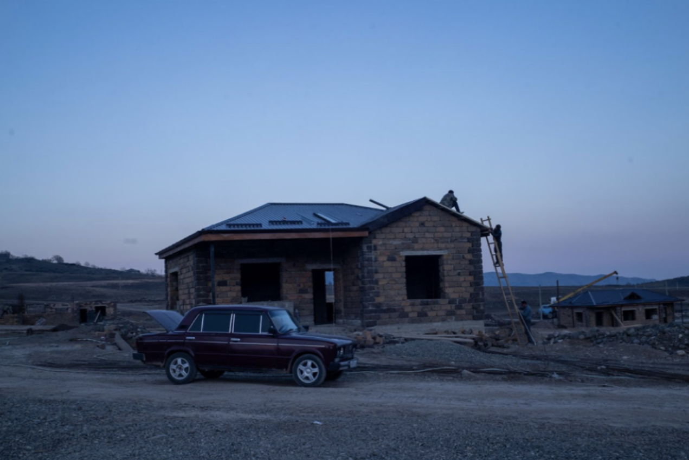
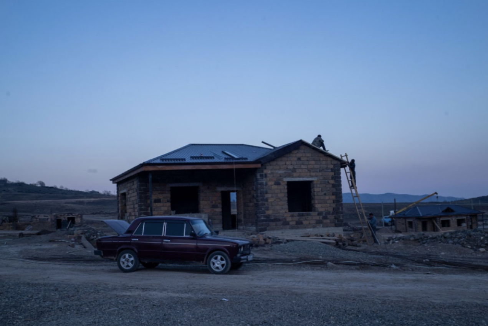
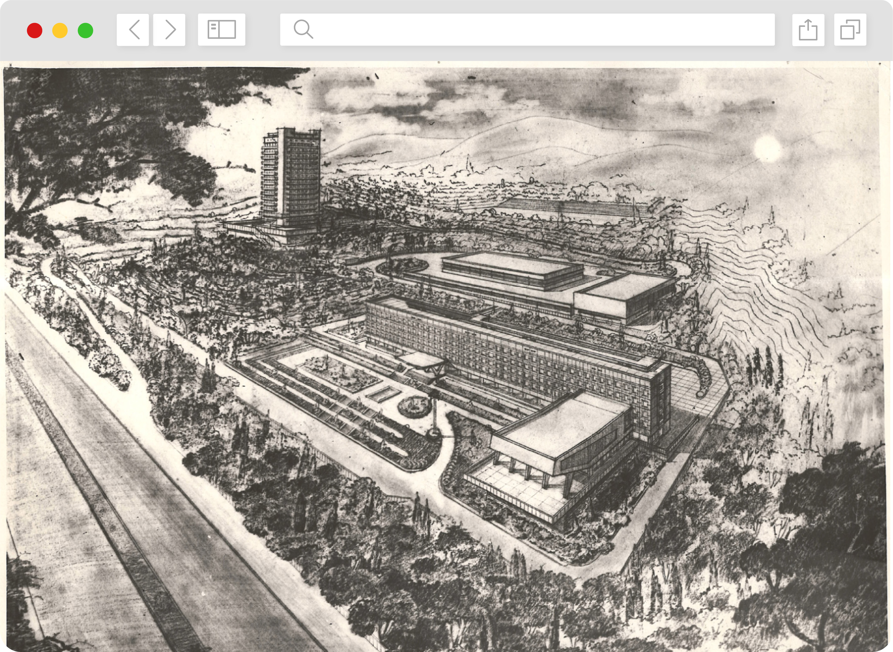
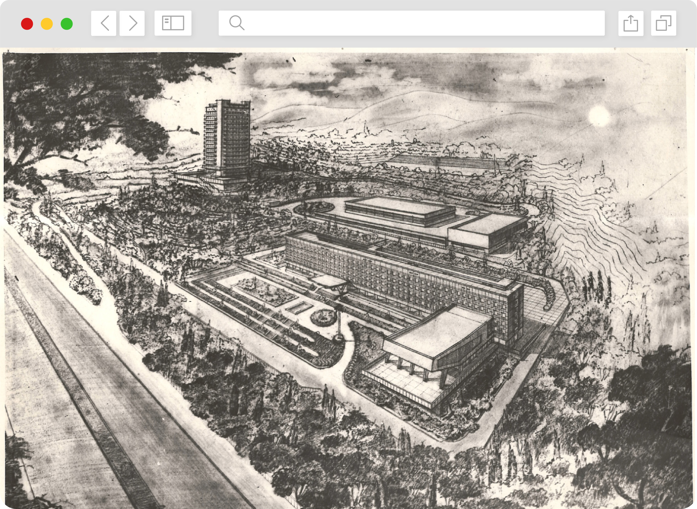

ENG
GE AZ ARM
Stories of displacement:
THE FATE OF THREE GENERATIONS AFTER DECADES OF CONFLICT
Three generations have been touched by conflict in the South Caucasus.
The disputes over Abkhazia, Nagorno-Karabakh and South Ossetia have
displaced hundreds of thousands of people across Armenia, Azerbaijan
and Georgia over the past 30 years. Just as each conflict is defined
by its own unique tragedies, so have the lives of the displaced in all
three countries been shaped by the politics, culture and society of
their communities. This project explores the stories behind the
displacement - the fate of those who had to flee their homes and the
response of the governments, towns and villages that took them in.Â
see more

 

 
